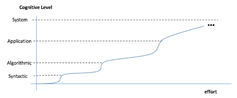

You will find ITM 352 both exciting and challenging and very unlike other courses you have taken or will take at Shidler. One primary difference is that programming is a skill that can only be built with practice, patience, and determination. At times this may be very difficult and frustrating. You cannot memorize your way to programming skill, you must develop and cultivate it by pushing yourself to increasingly higher levels of performance and capability. It is more similar to training for a sport than acquiring knowledge and insight (although this is also present). Because of this we take an “athletic” approach where you progress at your own pace and level. You will do most of your study and preparation work at home, leaving class time for personal “training” with the instructor. We hope you find this approach effective and valuable in developing your programming skills.
There are four skill levels of software development:

Each level involves fundamentally different cognitive skill (that is, “ways or thinking”). Acquiring these skill levels are not easy and will require sustained effort and determination. You cannot “study” your way to these skills. They can only be acquired though experience. However the rewards for acquiring these skills are huge! See the Future Benefits section for details. This course is very ambitious and explicitly designed to rapidly get you to the “Application” level of programming skill.
ITM 352 consists of a sequence of modules, each typically taking a week to complete. Most modules have the following structure:
This course follows an “inverted” classroom approach where you view lectures and follow along demos at home at you own pace and assignments are done in class. ITM 352 also implements an educational technique called athletic software engineering, which relies heavily on WODs (Workouts of the Day) to help you acquire mastery of the concepts in this course.
The skills you acquire in ITM 352 provide professional competitive advantages: